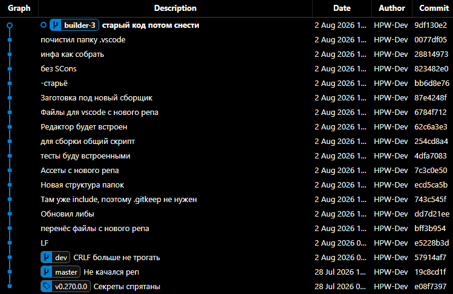

Очистил репозиторий
Код избавлен от спойлеров, мусора и перезалит в интернет. Рекомендую билдить с master-ветки, остальные ветви несобираемы и временные.
Код избавлен от спойлеров, мусора и перезалит в интернет. Рекомендую билдить с master-ветки, остальные ветви несобираемы и временные.
